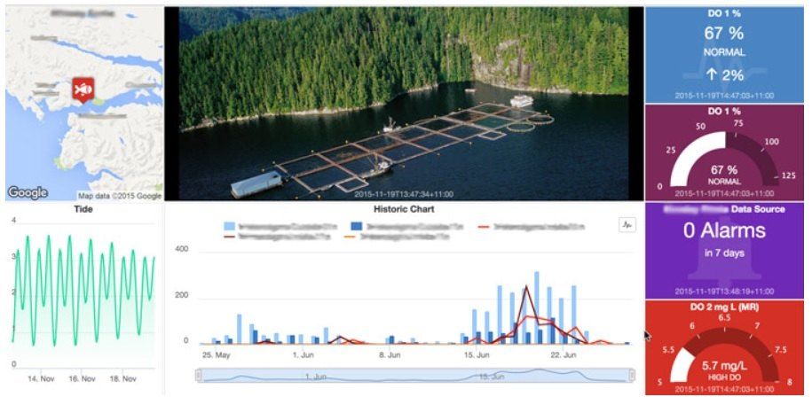

Wykład 6 — platforma to najpierw model danych, dopiero potem wykres
Wydział Inżynierii Środowiska i Inżynierii Mechanicznej
Uniwersytet Przyrodniczy w Poznaniu
Pytanie modułu: co jest urządzeniem, co telemetrią, co atrybutem — i kto ma prawo to zmienić?
Wykres jest ostatnim elementem łańcucha. Najpierw powstaje model danych — i to on decyduje, czy wykres będzie w ogóle możliwy do narysowania.
Kolejność, która działa
Kolejność, która nie działa
Zaczynamy od pulpitu, dobieramy widget, a potem dopasowujemy do niego dane z urządzenia.
Efekt: wersja firmware i adres IP jako szereg czasowy, progi alarmowe zaszyte w widgecie zamiast w profilu urządzenia, i zmiana okresu próbkowania wymagająca ponownego wgrania firmware.
| Rodzaj | Zapisuje | Historia | Typowa zawartość |
|---|---|---|---|
| Telemetria (szereg czasowy) | urządzenie | tak, z TTL | temperatura, wilgotność, napięcie zasilania |
| Atrybuty klienta | urządzenie | nie (ostatnia wartość) | wersja firmware, adres IP, model płytki |
| Atrybuty współdzielone | platforma → urządzenie | nie | okres próbkowania, progi, wskazanie pakietu OTA |
| Atrybuty serwerowe | platforma (wewnętrznie) | nie | active, lastActivityTime, inactivityTimeout |
Najczęstszy błąd projektowy
Wysyłanie wersji firmware i adresu IP jako telemetrii. Powstaje wtedy szereg czasowy tysięcy identycznych wartości, który zajmuje miejsce i niczego nie wnosi. To są atrybuty — to samo rozróżnienie, które wprowadziliśmy w module 03 przy sile sygnału i adresie IP.
Atrybut współdzielony to kanał z platformy do urządzenia, przeznaczony dla wartości, które zmieniają się rzadko i mają przeżyć restart.
Zmiana okresu próbkowania z 60 s na 300 s to edycja pola w interfejsie, nie nowe wydanie firmware.
Urządzenie potwierdza przyjętą wartość jako atrybut klienta. Bez tego nie wiemy, czy zmiana dotarła — wiemy tylko, że ją wysłano.
| Operacja | Temat standardowy | Skrót | Kierunek |
|---|---|---|---|
| Telemetria | v1/devices/me/telemetry |
v2/t |
urządzenie → platforma |
| Atrybuty klienta | v1/devices/me/attributes |
v2/a |
urządzenie → platforma |
| Atrybuty współdzielone | v1/devices/me/attributes |
v2/a |
platforma → urządzenie (subskrypcja) |
| Żądanie RPC | v1/devices/me/rpc/request/+ |
v2/r/req/+ |
platforma → urządzenie |
| Odpowiedź urządzenia | v1/devices/me/rpc/response/$id |
v2/r/res/$id |
urządzenie → platforma |
/j dla JSON, /p dla Protobuf. Bez przyrostka obowiązuje format ustawiony w profilu urządzenia.ThingsBoard obsługuje na tym styku wyłącznie QoS 0 i 1. Projekt nie może zakładać semantyki „dokładnie raz” — idempotencja odbiornika jest obowiązkowa.
| Typ | Jak działa | Kiedy stosować |
|---|---|---|
| Access Token | token jest nazwą użytkownika MQTT, hasło pozostaje puste | ćwiczenie, szybki start |
| MQTT Basic | własny clientId, login i hasło |
gdy potrzebny jawny clientId |
| X.509 | certyfikat przy dwustronnym TLS | wdrożenie produkcyjne |
Wybór typu poświadczenia jest decyzją bezpieczeństwa, nie wygody — i zapisujemy go razem z resztą założeń z modułu 01.
Access token jest sekretem
Token urządzenia nie może znaleźć się w sprawozdaniu, zrzucie ekranu, logu ani w repozytorium.
Ujawniony token pozwala obcemu urządzeniu podszyć się pod Twoje: publikować fałszywą telemetrię pod Twoją nazwą i odbierać polecenia przeznaczone dla Ciebie.
Zrzut ekranu z konfiguracją urządzenia to najczęstszy sposób przypadkowego ujawnienia tokenu w sprawozdaniu.
setSwitch) i parametrami.$id.$id nie wykonuje akcji ponownie.$id i podaje rzeczywisty stan wyjścia.To rozróżnienie jest istotą sterowania, które można audytować
Przełącznik pokazujący stan żądany kłamie zawsze, gdy urządzenie nie odpowiedziało. Przełącznik pokazujący stan potwierdzony mówi prawdę albo nie mówi nic — i to drugie jest informacją.
Co pulpit powinien pokazywać
active z atrybutów serwerowych.Czego pulpit nie zastąpi
Test, który warto wykonać na każdym pulpicie
Odłącz urządzenie i popatrz na pulpit przez minutę. Jeżeli wygląda tak samo jak przy działającym urządzeniu — pulpit jest źle zaprojektowany.

Przykład pulpitu środowiskowego IoT (nie interfejs ThingsBoard). Fot. Stephane Malhomme, Wikimedia Commons, CC BY-SA 4.0.
Na przykładzie można wskazać trzy warstwy informacji:
Ten układ przenosimy do ThingsBoard, ale budujemy go z własnych widgetów i encji.
Cyfrowy bliźniak nie jest wizualizacją 3D. Jego istotą jest model zasilany danymi bieżącymi i umożliwiający symulację; renderowanie przestrzenne jest opcjonalnym interfejsem, nie definicją.
Infrastruktura miejska
Przemysł
Pytanie, które otwiera moduł 07: gdy system liczy pojazdy i odczytuje tablice rejestracyjne, kto kontroluje dostęp do statystyk o przemieszczaniu się mieszkańców?
Deklarowane oszczędności procentowe we wdrożeniach miejskich wymagają raportu źródłowego. Bez niego należy traktować je jako wartości poglądowe, a nie dane pomiarowe.
Usługa zarządzana może zniknąć
To ten sam rodzaj ryzyka, który w module 03 widzieliśmy przy operatorze sieci Sigfox.
Oprogramowanie lokalne też zmienia licencję
ThingsBoard 4.4 używa licencji Business Source License 1.1 (BSL 1.1) i łączy wcześniejsze linie CE/PE w jeden produkt source-available. Kod wydania przechodzi na Apache 2.0 po czterech latach; wcześniejsze wydania CE pozostają na swoich dotychczasowych licencjach.
Pierwszy krok ćwiczenia
Zapisz dokładną wersję i licencję instalacji, na której pracujesz, wraz z datą sprawdzenia. Ten zapis jest częścią sprawozdania.
Dla instalacji starszych niż 4.4 Community Edition i Professional Edition różnią się zakresem funkcji. Od wersji 4.4 linie są scalone w jeden produkt source-available.
Dlatego instrukcja znaleziona w sieci może opisywać inną wersję, edycję lub licencję niż instalacja używana na zajęciach.
Platforma udostępnia rozdział logiczny przez dzierżawców, klientów, profile urządzeń i uprawnienia.
Izolacja fizyczna jest decyzją wdrożeniową — wymaga osobnych instalacji albo osobnych baz danych.
Co zostaje z tego modułu
Moduł 07 — odporność i eksploatacja
System działa i da się nim sterować. Ostatni moduł przechodzi przez całość przekrojowo: jak system ma sam zauważyć, że urządzenie zamilkło, jak udowodnić, że alarm zamyka się po powrocie, i jakie obowiązki wychodzą poza kod.
Internet Rzeczy · Wykład 6 — ThingsBoard CE